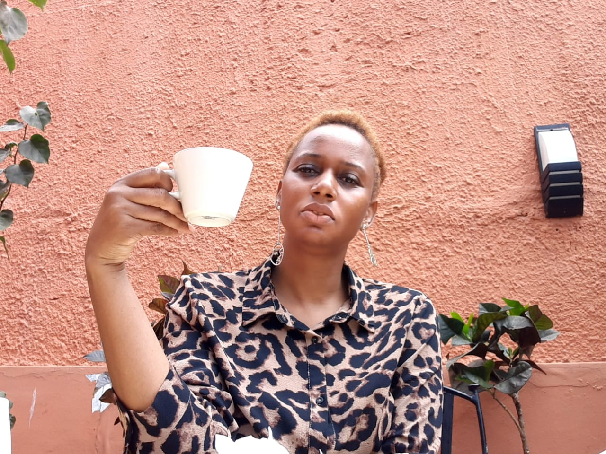

Webinar Gratuito
Como Sobreviver a Despedimentos Coletivos
🗓 Data
10 de Junho de 2025
⏰ Horário
18h30 – 20h00 (GMT+2)
📍 Plataforma
Zoom | Riverside.fm
Por que participar?
Moçambique enfrenta um aumento de despedimentos coletivos nos setores do turismo, humanitário e extrativo. Este webinar reúne especialistas em saúde mental, transição profissional e felicidade organizacional para partilhar estratégias de resiliência e transição de carreira eficaz.
Speakers & Moderation

Ana Beatriz Morais
Consultora em Desenvolvimento Organizacional & Bem-Estar | Moderadora

Ana Margarida Baptista
Médica & Consultora Sénior em Saúde Pública e Género

Assissa Gafur
Especialista em Saúde Mental
Celso Sitoi
Consultor de Felicidade Organizacional
Programa
- Ronda 1 – 10 min: Introduções breves (2 min cada)
- Ronda 2 – 30 min: Apresentações guiadas (7 min cada)
- Ronda 3 – 20 min: Roda de conversa & Perguntas
- Ronda 4 – 10 min: Considerações finais
Inscrição Gratuita
Ao clicar em "Quero Participar" concorda em receber o link de acesso por e-mail. Não enviaremos spam.